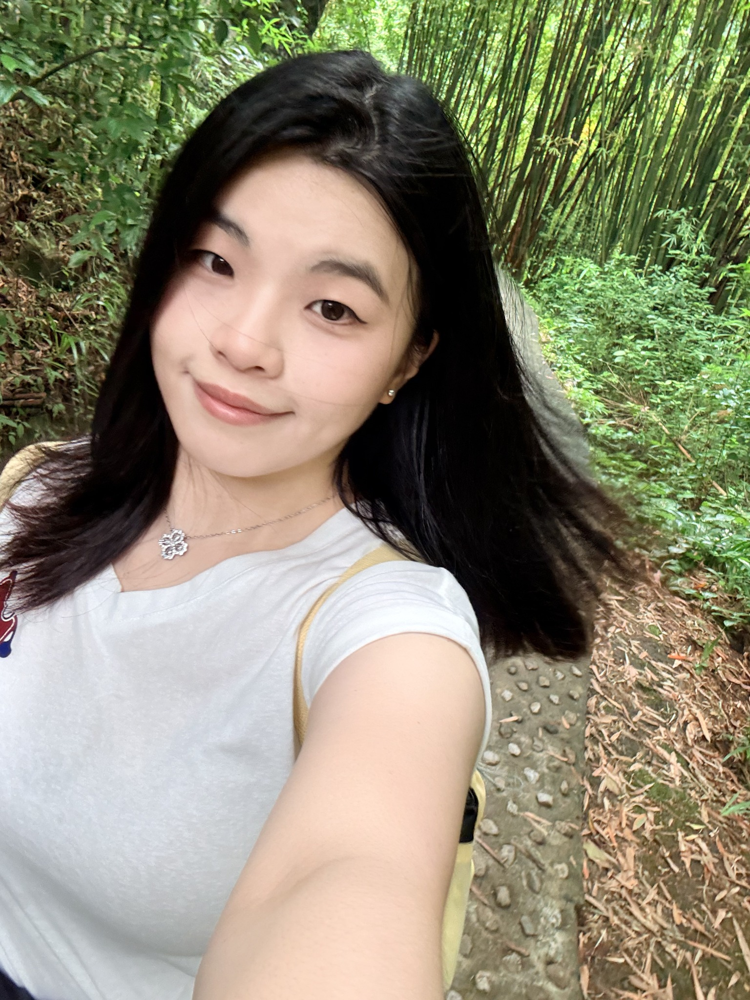
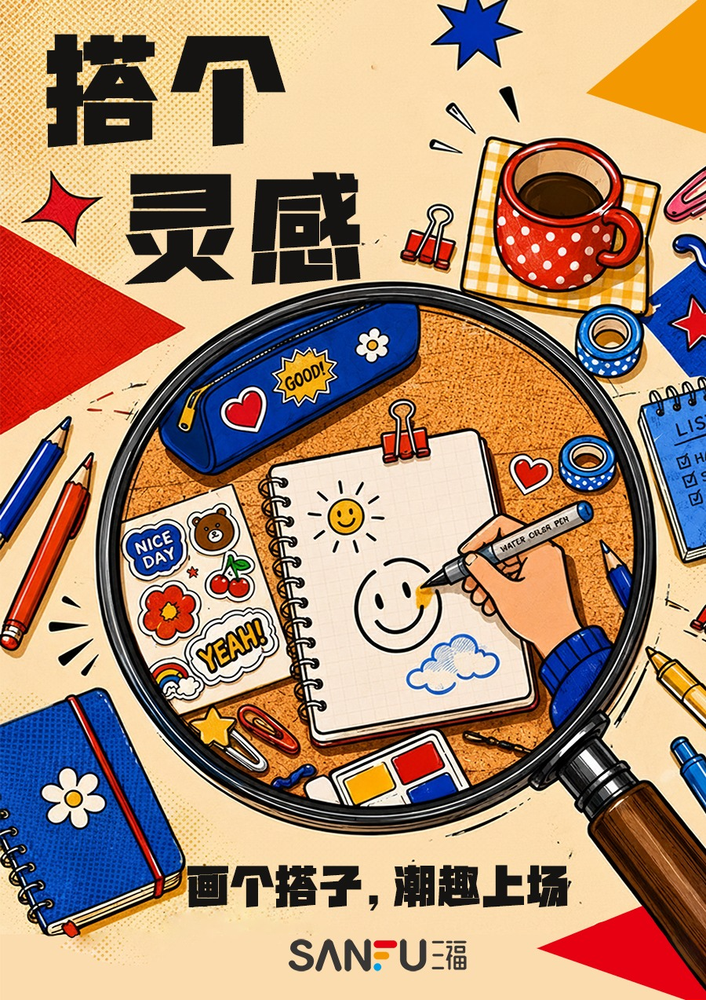
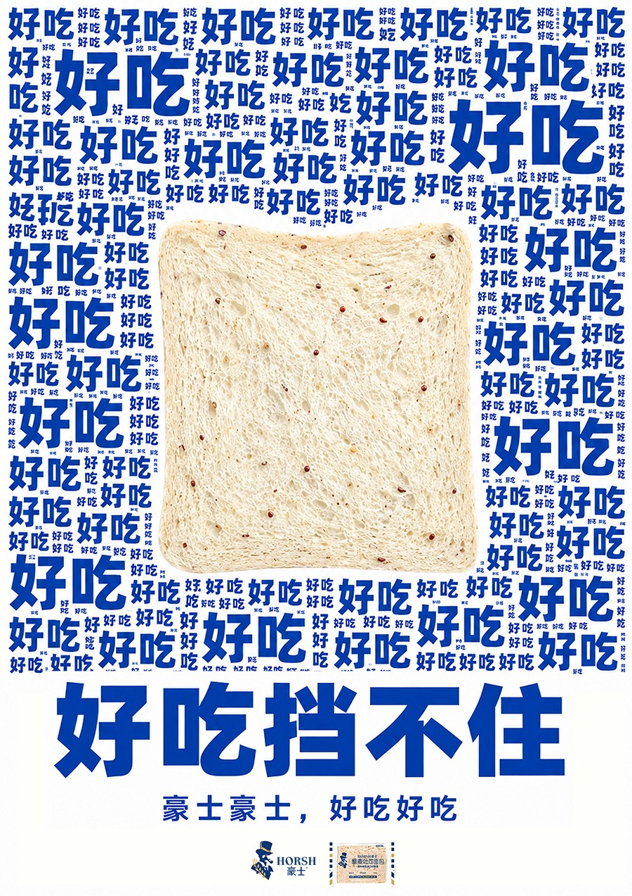
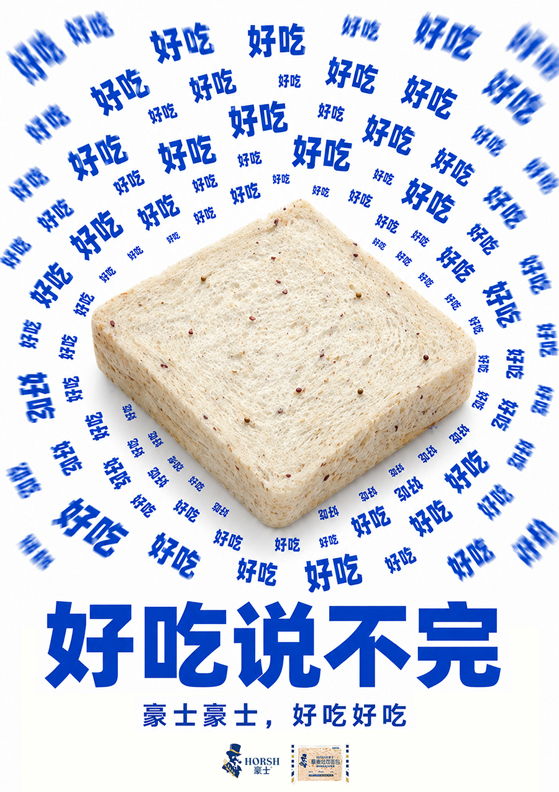
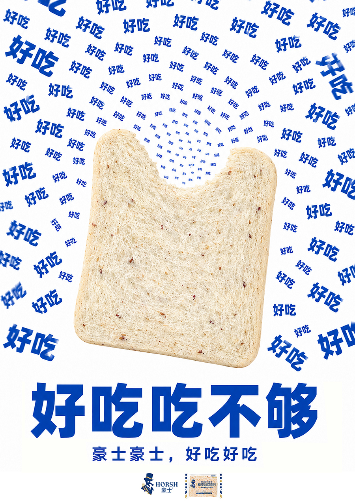

HELLO, I'M ZHANG YAOSHENG
我明媚✳
也自由。

章耀升 · 艺术与科技
开心果本人！
A LITTLE SUNSHINE. A LOT OF CURIOSITY.
保持好奇 ✳ 自由生长 ✳ 快乐创作 ✳ STAY SUNNY ✳ 保持好奇 ✳ 自由生长 ✳
01 / ABOUT ME
关于我的一点点
关于我的一点点
☺开心
创作ART × TECHNOLOGY
创作ART × TECHNOLOGY
认真创作，
也认真开心。
我是章耀升，一名艺术与科技专业的大四学生。
我喜欢从日常细节里找灵感，把想法变成清晰、有温度的视觉表达；也在尝试让图像、文字和声音彼此连接。
「我明媚也自由」是我的自我介绍。希望创作里一直保留这份轻盈、好奇与生命力。
✳
灵感从日常来观察细节，捕捉生活里的小情绪与好点子。
TOOLS / 创作工具视觉 · 图像 · 声音
Ai
Illustrator矢量绘图 / 视觉排版
01Ps
Photoshop图像处理 / 视觉合成
02Cu
Cubase音频编辑 / 声音编排
0302 / SELECTED PROJECTS
想法，自有形状。
在传统与当代之间，
也在日常与想象之间。

18TH COLLEGE ADVERTISING ART COMPETITION
省级一等奖
放大「搭」的日常
以放大镜聚焦三福产品与生活的连接
搭起底气、搭向远方、搭出灵感。
三福 ×「搭」
用放大镜看见好物如何成为生活里的好搭子。



18TH COLLEGE ADVERTISING ART COMPETITION
省级三等奖
好吃，是最直接的理由。
以文字放大美味体验
挡不住、说不完、吃不够。
豪士面包｜文字海报
让“好吃”成为最醒目的视觉语言。
03 / SAY HELLO
很高兴，
在这里遇见你。☺
关于设计，关于生活，
或只是来分享一件开心的小事。